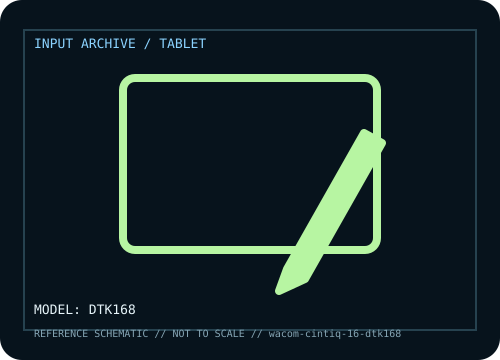

[ PEN TABLETS AND DIGITIZERS // IDENTIFIED COMPONENT ]
Wacom Cintiq 16 (DTK168)
Current 16-inch Cintiq pen display, distinct from earlier DTK-1660 models.

MODEL IDENTIFICATION: Manufacturer model / identifier: DTK168. Compare the unit label, regional suffix, and revision against manufacturer documentation before repair or compatibility claims.
Model specifications
| Catalog subcategory | Pen tablets and digitizers |
|---|---|
| Exact model / ID | DTK168 |
| Model-specific features | 16-inch panel, Pro Pen 3 technology and pressure input; bundle accessories vary by SKU. |
| Interface and host support | USB-C single-cable needs DisplayPort Alt Mode; otherwise use separate video/data/power connections and driver. |
| Revision / driver caveat | DTK168 differs from DTK-1660 and Cintiq Pro; check rear code and host video support. |
Preservation and service notes
Protect screen/nibs, avoid USB-C twist, retain adapters and record pressure calibration/driver.
Record the as-found label, accessories, host OS, driver or firmware version, and test method. Separate observed condition from published specifications; family-level claims are not proof of an individual unit's revision.
Manufacturer source
- Wacom Cintiq 16 (DTK168) — manufacturer model pageModel-specific manufacturer reference for identifying specifications, regional SKU, and linked current support documentation.
Manufacturer pages can change or retire. Preserve the applicable manual and note its revision when documenting a physical device.